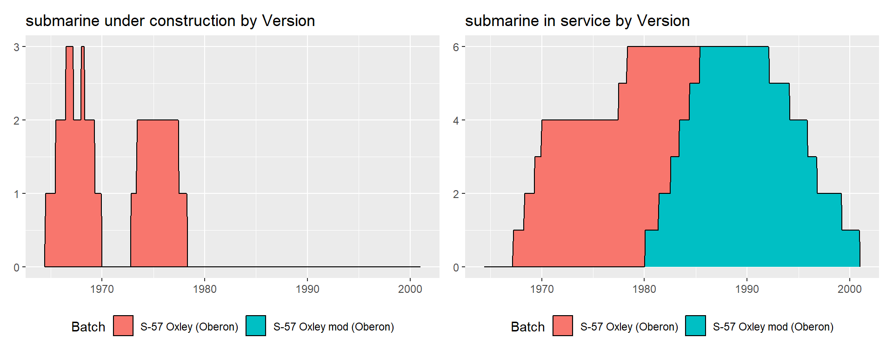
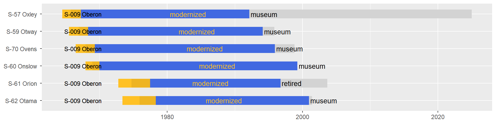
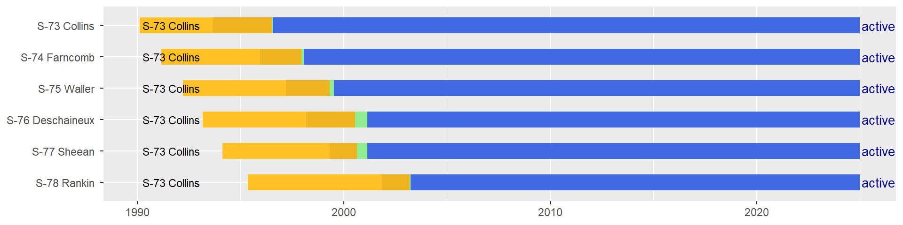

Australia
2024-07-18
Australia is a Pacific nation of 26.7 million inhabitants. It is by far the largest nation in Oceania, covering the whole Australian continental mainland, with an extremely long coastline. The modern country of Australia is a descendant of the British colonial period which started on the continent in the 1780s. As with most other British colonies in which a large European population settled, the path to independence was very gradual and long, from federation in 1901 to full independence in 1986 - though the country had been functionally independent since after World War 1. Today Australia remains a part of the Commonwealth Realm, with the British monarch as head of state.
Similarly, the Royal Australian Navy was founded in 1901 and was attached to the Royal navy until the end of World War 2 when it became an independent force. As long as the RAN was attached to the RN it mostly acted as a source of manpower to augment the cruiser, destroyer, and later escort forces of the RN. During WW1 the RAN operated a small force of 1 battlecruiser, 6 cruisers, 6 destroyers, and 2 submarines, receiving 1 cruiser, 6 destroyers, 6 submarines, and 3 sloops in the immediate aftermath. During WW2, the RAN was a more important force, operating 7 cruisers, 18 destroyers, 14 sloops and frigates, and 56 minesweepers. Another 2 aircraft carriers, 2 destroyers, and 4 frigates laid down during the war entered service post-war. From the cold-war and onward, the RAN became a multi-use navy, today operating, other than submarines, 2 amphibious assault ships, 1 amphibious dock, 3 missile destroyers, 7 missile frigates, and numerous smaller auxiliaries.
The history of the RAN’s submarine fleet reflects its beginnings. As long as the RAN was attached to the RN, the requirements for a submarine fleet in commonwealth navies was inconsistent as the RN had the main submarine force. Thus, Australia had 3 separate attempts at creating a force with boats from the UK, which were all short lived. Two new E class boats in the early 1910s, were lost at the start of WW1, 6 second-hand J class boats received in 1919 served only 3 years, 2 new O class boats also served only 3 years before transferring to the RN. During WW2, Australia borrowed an old Dutch submarine with no operational value for anti-submarine training purposes. Only after WW2 was a real effort to build a submarine fleet taken with the introduction of 6 new Oberon class submarines built in the UK in the 1960s and 1970s. These were then replaced in the 1990s by 6 new submarines of the Swedish Type 471 (Collins class). For the first time these submarines were built in Australia and from a non-British design. As a whole, 23 submarines have served in the Australian navy, with 6 in service today.
Australia has made major submarine news in 2021. The 6 Collins were to be replaced by 12 conventional variants of the French nuclear-powered Barracuda class. However, and without forwarding France and Naval Group, Australia announced it would unilaterally withdraw from the agreement as it requirements had changed. The new requirements being for nuclear submarines, Australia partnered up with the US and UK for a new security agreement which includes initially the purchase of US Virginia class nuclear attack submarines, and then new AUKUS class submarines, designed jointly with the UK. This also has the effect of delaying the replacement date of the Collins class. One oddity in this saga is the use of “nuclear power requirement” as the excuse for terminating the contract for Barracuda class submarines, when the Barracuda was initially designed as nuclear submarine and is currently being built as such for the French navy. Changing the requirements within that contract would have no doubt been more time effective in obtaining a fleet of nuclear submarines, however other political considerations must have taken priority.
Submarines operated by Australia
Individual submarines by class
Specification summaries

E class
Two submarines of the British E class, 1st group. They served in the Mediterranean and Dardanelles during WW1, but were quickly lost.
| Version | Boats | Number | Displacement | Propulsion | Power | Fuel | Speed | Range | Depth | |
|---|---|---|---|---|---|---|---|---|---|---|
| 12 | E group 1 | all | 2 | 655/796t | diesel-electric | 1600/840hp | NAt | 15/9kts | 3000/NAnm | 30m |
| Version | Boats | Year | Torpedo_text | |
|---|---|---|---|---|
| 13 | E group 1 | all | 1914 | 4x450mm (8 torp) |
/none/1405_AE1_20230628194419.png)
J class
Second-hand J class submarines acquired just after WW1, and then retired quickly.
| Version | Boats | Number | Displacement | Propulsion | Power | Fuel | Speed | Range | Depth | |
|---|---|---|---|---|---|---|---|---|---|---|
| 13 | J | all | 6 | 1204/1820t | diesel-electric | 3600/1350hp | 91t | 19.5/9.5kts | 5000/NAnm | 50m |
| Version | Boats | Year | Torpedo_text | Gun_text | |
|---|---|---|---|---|---|
| 14 | J | all but J-3 | 1919 | 6x450mm (12 torp) | 1x102mm L40 + 1x40mm L37 |
| 15 | J | J-3 | 1919 | 6x450mm (12 torp) | 1x76mm L30 + 1x76mm L28 |

O class
Newly built British O class submarines which were quickly transferred to the RN. They served in WW2 with one being lost in 1939, and the second being retired just at the end of the war.
| Version | Boats | Number | Displacement | Propulsion | Power | Fuel | Speed | Range | Depth | |
|---|---|---|---|---|---|---|---|---|---|---|
| 14 | O group 1 | all | 2 | 1636/1872t | diesel-electric | 3100/1350hp | 166t | 15/8.5kts | 4560/60nm | 60m |
| Version | Boats | Year | Torpedo_text | Gun_text | |
|---|---|---|---|---|---|
| 16 | O group 1 | all | 1927 | 8x533mm (16 torp) | 1x102mm L40 |
/none/2079_Otway_20230628194426.png)
K-VIII class
A former Dutch colonial submarine based in the East-Indies. After fleeing the East indies it was retired by the Dutch and transferred to the RAN. It was used as an ASW training boat, and not an operational combat boat. It was quickly retired as well.
| Version | Boats | Number | Displacement | Propulsion | Power | Fuel | Speed | Range | Depth | |
|---|---|---|---|---|---|---|---|---|---|---|
| 15 | K-VIII | all | 1 | 583/810t | diesel-electric | 1550/400hp | NAt | 15/8kts | 3500/25nm | 50m |
| Version | Boats | Year | Torpedo_text | Gun_text | |
|---|---|---|---|---|---|
| 17 | K-VIII | all | 1943 | 4x450mm (10 torp) | 1x88mm L42 + 1x12.7mm L90 |
Oberon class
With these boats Australia became the biggest export customer of the successful Oberon class submarine. These formed the first true submarine fleet of Australia.
| Version | Boats | Number | Displacement | Propulsion | Power | Fuel | Speed | Range | Depth | |
|---|---|---|---|---|---|---|---|---|---|---|
| 16 | S-009 Oberon | all | 6 | 2030/2410t | diesel-electric | 3680/6000hp | 258t | 12/17kts | 9000/NAnm | 230m |
| Version | Boats | Year | Torpedo_text | Missiles | |
|---|---|---|---|---|---|
| 18 | S-009 Oberon | all | 1967-1978 | 8x533mm (24 torp) | NA |
| 19 | S-009 Oberon | all | 1980-1985 | 6x533mm (20 torp) | UGM-84 Sub-Harpoon |



Type 471
Swedish designed submarines which replaced the Oberon boats one for one. Oddly enough they do not include the Striling AIP then being introduced in new A-19 and refitted A-17 submarines used by the Swedish navy.
| Version | Boats | Number | Displacement | Propulsion | Power | Fuel | Speed | Range | Depth | |
|---|---|---|---|---|---|---|---|---|---|---|
| 17 | S-73 Collins | all | 6 | 3050/3350t | diesel-electric | 6900/7000hp | NAt | 11/21kts | 11500/480nm | 300m |
| Version | Boats | Year | Torpedo_text | Missiles | |
|---|---|---|---|---|---|
| 20 | S-73 Collins | all | 1996-2003 | 6x533mm (22 torp) | UGM-84 Sub-Harpoon |

